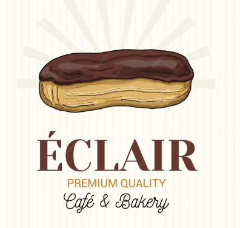
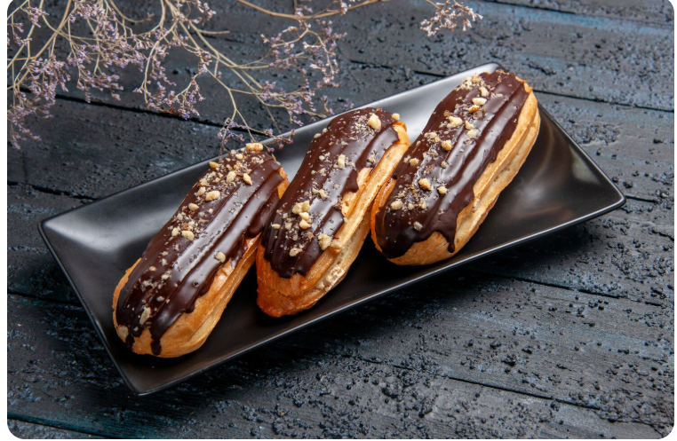

Éclair Café & Bakery

Classic Chocolate Éclairs
Classic Chocolate Éclairs are a traditional French pastry made with light and airy choux dough, filled with smooth vanilla pastry cream, and finished with a rich chocolate glaze. They are elegant, creamy, and perfect for a French-inspired dessert.
Ingredients
For the Choux Pastry
- ½ cup water
- ½ cup milk
- ½ cup unsalted butter
- 1 cup all-purpose flour
- 4 large eggs
- 1 tablespoon sugar
- ¼ teaspoon salt
Instructions
- Preheat the oven to 400°F. Line a baking sheet with parchment paper.
- Remove from heat and add the flour all at once. Stir until a smooth dough forms.
- Let the dough cool slightly. Add the eggs one at a time, mixing well after each addition.
- Transfer the dough to a piping bag and pipe long strips onto the baking sheet. Bake until the éclairs are puffed and golden.
- Prepare the pastry cream by heating the milk. In a bowl, whisk together the egg yolks, sugar, and cornstarch. Slowly add the warm milk and cook until thickened. Stir in the vanilla.
- Allow the éclairs and pastry cream to cool. Fill each éclair with the vanilla pastry cream.
- Dip the tops of the éclairs into the chocolate glaze or spread the glaze over them.
- Chill briefly, then serve and enjoy!